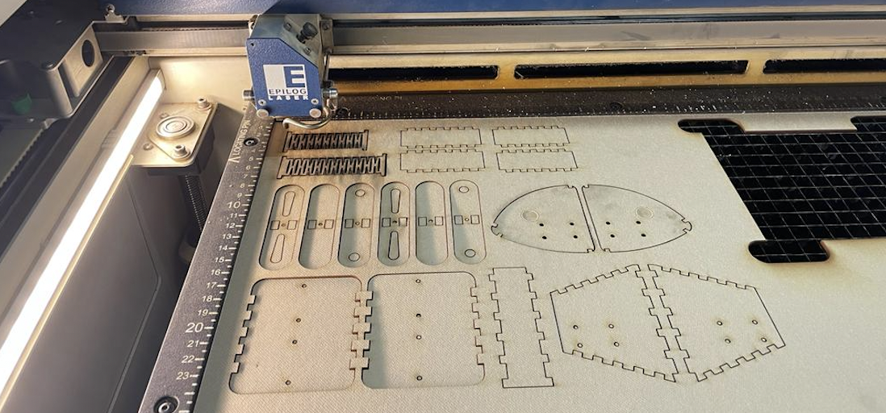

Learn how to print your own models!
Check this out:
Using the Laser Cutter Properly and Cutting out all Pieces
1) Click here, or search “epilog laser” and click the first link. Under the “Support + Service” menu in the top right corner and hover over “Driver and Firmware Downloads” and click on “Fusion/ Fusion M2 Lasers” and download the version for your computer. After downloading, you should have two packets and a folder that has a pdf file with detailed instructions After setting it up, you should have both the Epilog Engraver and the EpilogApp applications.
2) Turn on the fans of your laser cutter: one that blows on the laser cutter and one that pulls in the smoke. If you don’t turn them on you could fog up the lens or, in the worst-case scenario, set it on fire. If you see flames while the machine is working open it. This will automatically disable the laser. There are also two fire extinguishers next to the machine.
3) Put material you want to cut on the platform making sure it’s flush with the corner and sides. For this project, we will use a 3mm KRAFTPLEX sheet.
4) You can operate the board on the machine with the joystick and buttons. You can move between the screen that shows the “jobs” (the files sent), one to move the platform up and down, one to move it on the xy axis and one to restore its home position. Go to the screen that moves it up and down.
5) There is an arrow shaped metal piece in the upper left of the machine and there are two metal pieces protruding from the cutter part of the machine. Put the arrow there, facing downward.
6) Move the platform up until the tip of the arrow almost touches the board. After calibrating remove the arrow and set it aside. If you push down the joystick it will set your current position as the new default position.
7) Open the ai file you’ve prepared and press ⌘P. Make sure you select “Epilog Engraver” in the printer section and “Default (Epilog PDE)” in the PPD section. Click on “Page Setup” and “Continue”. Scale should be 100%, the orientation portrait, format for “Epilog Engraver”, and paper size “Epilog Fusion 40x28(1.016 by 711 mm)”. Click “Ok” then “Print”.
8) The file should drop into an Epilog Engraver tab, and once it’s ready open EpilogApp.
9) On the right side of the screen there are “Vector Less Than ” and “Min. Stroke”. Vector allows you to cut while raster allows you to raster. By setting vector less than 0.26 px you tell the machine to cut all the lines where stroke is less than 0.26 px. This is why you set the stroke of the parts where you cut to 0,25. The Min. Stroke shows the minimum stroke present in the file, and it’s immutable. Unless you change the file you can’t temper with the Min. Stroke. Your “Vector Less Than” and “Min. Stroke” should both be 0.26. This makes the distinction between vector and raster, and if your Min. Stroke is less than your desired vector stroke you won’t be able to cut. When rastering images this is usually the case as the stroke of images is zero.
10) On the left side click on “Edit Settings” and a window will open. From the “Job Type” select “Raster” if you only want to raster, “Vector” if you want to cut and “Combined” to do both. 50, 50 is appropriate for raster settings but the speed and power of vector change for different materials and thicknesses. For a 3 mm KRAFTPLEX sheet, set the speed to 6 and power to 42. Click “Ok” to confirm. Press “Print” and it should drop to the job screen on the laser cutter.
11) After making sure you’re on the right job (the file name and predicted time will show up on the screen) press the play button. Cycle through the job twice to cut the KRAFTPLEX completely.
12) After you get your pieces don’t forget to turn off the machine and the fans, and set aside the leftover material if there’s enough untouched material for someone else to use, don’t throw it away if that’s the case.

